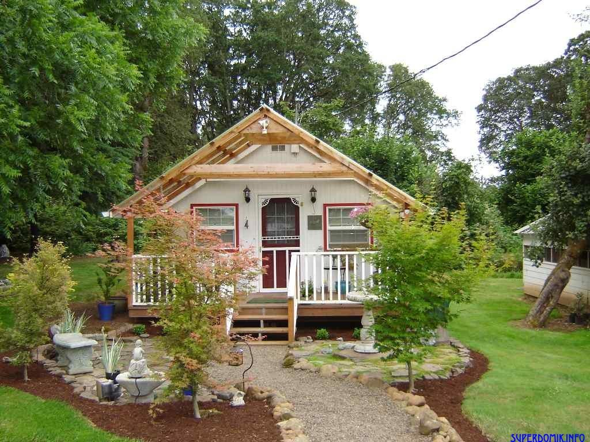

-С 2008 учился в ГГПЭК им. Ивана Счастного (7 коледж) по профессии электромонтер по ремонту
и обслуживанию оборудования,релейной защиты и автоматики,
электрических станций и подстанций
Самыми нелюбимыми предметами были химия и математика.Все из-за того,
что не нравились химческие формулы, типа CO2, и математические 10+453.
И из-за этого приходилось часто прогуливать))))
C 2012 года по 2014 проходил срочную службу в рядах вооруженных сил РБ,
во внутренних войсках.
Трудовые навыки и места работы:
Первым местом работы была организация "Гроднобурвод" в которой я в свои 16 лет освоил 14 профессий.
Имел опыт работы в сфере:
столярных работ
курьера
все отрасли связанные с электротехничискими навыками
кулинарии
строительные сферы
торгового агента
разнорабочий и многие другое
Я никогд не боялся никакой работы,и к любой работе подходил
с великим интересом и желанием узнать что-то новое.
Самая худшая работа которая мне не понравилась это
дворник.
Самая интересная на мой взгляд работа,это работа связанная с
ремонтной деятельностью,
а так же в кулинарной отрасли.
На данный момент работаю в ОАО"Гродножилстрой"на должности
оперативно-дежурного электромонтерa

Трудовые условия и окружающая среда на работе оставляют желать лучшего.
.
Планы на будущее:
Хочу выучить языки программирования
php
html & css
js
Мне это нужно для саморазвития,а в дальнейшем,
возможно,
и для смены рабочего места и профиля. Считаю,что за программированием стоит будущее,
и данная отрасль будет процветать многие годы, и с каждым годом всё больше и больше!
И я буду очень рад находиться в числе людей,
которые работают в сфере IT-технологий!
Вы посетили прототип моего первого сайта.Спасибо что зашли)))